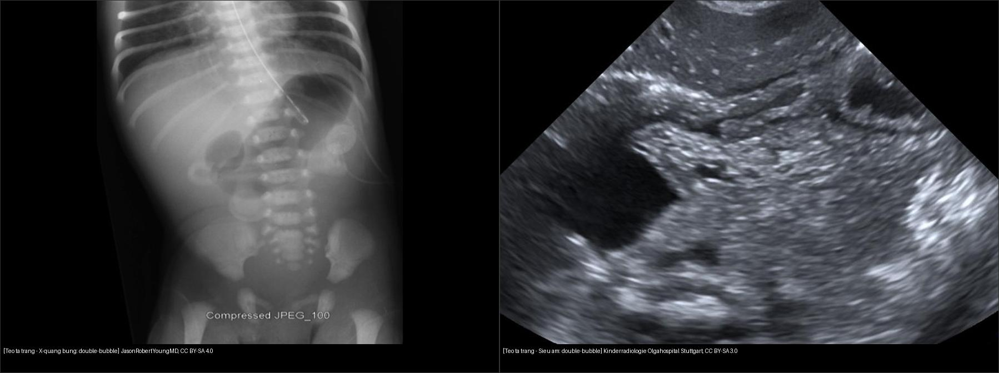
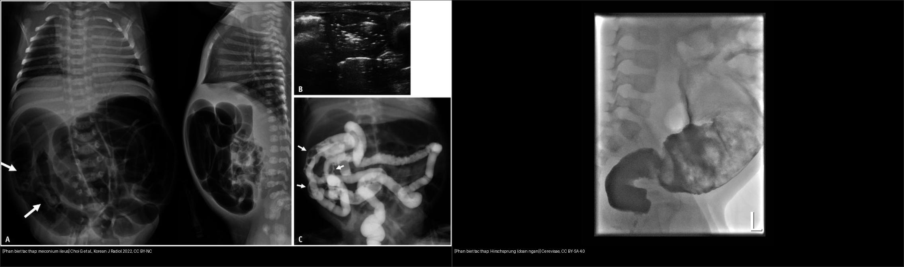
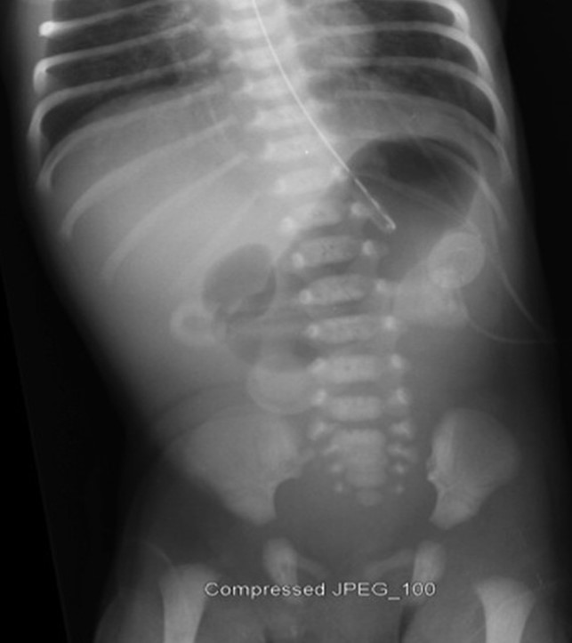
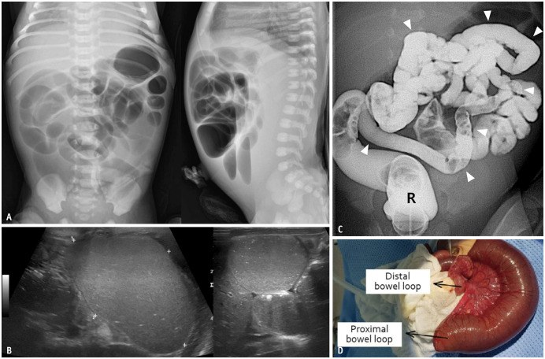
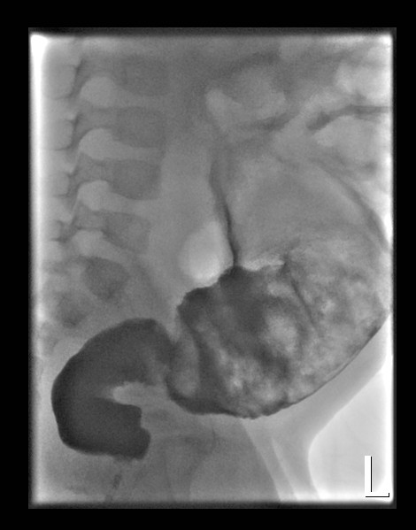
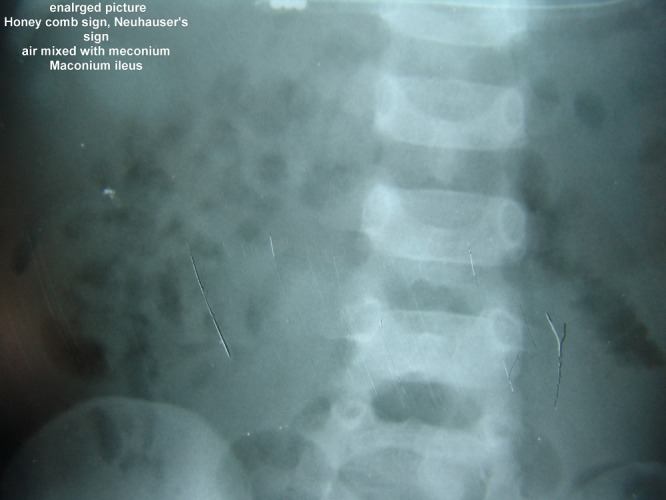

622 — Tắc ruột sơ sinh: double-bubble, microcolon, Hirschsprung / Neonatal bowel obstruction
Tags: pattern:tac-ruot-so-sinh pattern:double-bubble pattern:microcolon pattern:transition-zone vung:bung-nhi score:Neuhauser protocol:XR-contrast-enema
Mức chắc chắn (certainty): tổng hợp y văn (literature synthesis) — nhóm tự biên từ y văn mở (J Neonatal Surg 2017, Korean J Radiol 2022, Diagnostics 2024), chưa gắn ca nguyên văn đơn lẻ.
1. Tổng quan bệnh học – cơ chế hình ảnh
- Tắc ruột sơ sinh chia theo mức: tắc cao (proximal) — tá tràng/hỗng tràng đoạn gần (nôn mật sớm, ít quai giãn); tắc thấp (distal) — hồi tràng/đại tràng (chướng bụng rõ, nôn muộn). Quy tắc đọc: càng tắc thấp càng nhiều quai giãn.
- TẠI SAO double-bubble (teo tá tràng): tắc hoàn toàn ở D2 → dạ dày + tá tràng đoạn gần căng đầy khí/dịch (2 bóng hơi có mức dịch), không khí không qua được nên KHÔNG có hơi ở đoạn xa (đại tràng "câm"). Teo tá tràng ~1/5.000–1/10.000 trẻ sinh, ~30% kèm Trisomy 21, hay phối hợp VACTERL (lỗ hậu môn, thực quản, tim, thận).
- TẠI SAO microcolon (teo hỗng-hồi tràng): đại tràng chưa bao giờ nhận phân su nên không bao giờ giãn; trên thụt cản quang thấy đại tràng mảnh < 1 cm ("microcolon") + quai ruột non giãn nhiều bên trên + vùng chuyển tiếp. Microcolon = "đại tràng chưa dùng" → tắc ở phía trên đại tràng (teo hỗng-hồi tràng), trừ khi bản thân đại tràng bệnh (teo đại tràng, Hirschsprung đoạn dài).
- TẠI SAO dấu Neuhauser (meconium ileus): phân su quánh đặc (inspissated) trộn khí → hình "bọt xà phòng/honeycomb" (bọt khí nham nhở giữa phân su), không mức khí-dịch vì phân su dính; bụng "hạt kính" (ground glass) + khối mềm. Meconium ileus chiếm ~10–20% trẻ xơ nang (cystic fibrosis — CF); ngược lại ~80–85% meconium ileus có CF.
- TẠI SAO Hirschsprung (vô hạch đại tràng): đoạn thiếu tế bào hạch (aganglionic) không giãn được → tắc chức năng; ~90% đoạn ngắn ở trực tràng - sigma, 1/5.000, tỉ lệ nam:nữ ~4:1, chậm thải phân su > 48 giờ (bình thường 99% trẻ đủ tháng thải trong 48 giờ). Hình: vùng chuyển tiếp (transition zone) trực tràng hẹp → đại tràng trên giãn; chỉ số trực-tràng-sigma (rectosigmoid index) < 1 là bất thường (bình thường trực tràng ≥ sigma).
- TẠI SAO meconium plug / đại tràng trái nhỏ (small left colon): nút phân su/nhu động chậm → đại tràng trái hẹp; gặp ở con mẹ đái tháo đường, hay tự khỏi sau thụt.
2. Mẫu hình + chẩn đoán phân biệt theo mức tắc (Gamut)
- Tắc cao — "double-bubble đến đâu là tắc đến đó": teo tá tràng (D2, 2 bóng, không hơi xa), pancreas anulare (vòng tụy quấn D2, hình y hệt), hội chứng Ladd/ xoắn trung tràng (tá tràng thay vì tắc thì "corkscrew/whirlpool", DJJ bất thường — cấp cứu gấp), teo hỗng tràng đoạn gần.
- Tắc thấp — "nhiều quai giãn + đại tràng câm": teo hỗng-hồi tràng (microcolon + giãn trên), meconium ileus (Neuhauser + CF), Hirschsprung (transition zone + trễ phân su), meconium plug/đại tràng trái nhỏ (nút phân su, con mẹ ĐTĐ), teo đại tràng, dị tật hậu môn - trực tràng.
- Mnemonic tắc ruột sơ sinh "DIME": Duodenal atresia (double bubble), Ileal/jejunal atresia (microcolon), Meconium ileus (Neuhauser, CF), Enteric/malrotation (volvulus)… cộng thêm Hirschsprung (transition + trễ phân su) và meconium plug (con mẹ ĐTĐ).
- Nói cách khác: teo = tắc hoàn toàn (không hơi xa); meconium = tắc trong lòng ruột; Hirschsprung = tắc chức năng (thành ruột).
3. Bảng so sánh phân biệt (ma trận đối chiếu)
| Thực thể (entity) | Hình ảnh điển hình | Chốt vào (rule-in) | Chốt loại (rule-out) | Gợi ý xác nhận |
|---|---|---|---|---|
| Teo tá tràng (duodenal atresia) | Double-bubble dạ dày + D2, không hơi đoạn xa, ~30% Trisomy 21 | Double-bubble + đại tràng câm hẳn | Có hơi đoạn xa → không phải teo hoàn toàn (stenosis/pancreas anulare/windsock) | X-quang + siêu âm; mổ (nối tá tràng) |
| Teo hỗng-hồi tràng (jejunoileal atresia) | Nhiều quai giãn nhỏ, microcolon < 1 cm, quai ruột non không phân biệt được với đại tràng | Microcolon + quai giãn trên + không phân su đầu xa | Đại tràng không mảnh → nghĩ meconium ileus/Hirschsprung | Thụt cản quang (microcolon) rồi mổ |
| Meconium ileus (xơ nang) | Bụng hạt kính + dấu Neuhauser (bọt xà phòng), không mức khí-dịch, microcolon, đôi khi vôi hóa | Neuhauser + tiền sử CF/gia đình CF + microcolon | Thấy rõ mức khí-dịch + quai giãn đều → nghĩ teo/ tắc cơ học khác | Thụt cản quang điều trị (water-soluble/N-acetylcysteine), sweat test, gen CFTR |
| Hirschsprung (vô hạch) | Vùng chuyển tiếp trực tràng-sigma, đại tràng trên giãn, không hơi trực tràng, trễ phân su > 48 giờ | Transition zone + rectosigmoid index < 1 + trễ phân su | Trực tràng giãn bình thường khi thụt → loại Hirschsprung (độ nhạy thụt ~70%) | Sinh thiết hút trực tràng (vàng chuẩn: mất tế bào hạch) |
| Meconium plug / đại tràng trái nhỏ | Vùng chuyển tiếp rõ ở góc lách (đại tràng trái hẹp), nút phân su (khuyết thuốc), con mẹ ĐTĐ | ĐTĐ mẹ + chuyển tiếp ở lách + tự khỏi sau thụt | Chuyển tiếp ở trực tràng-sigma → nghĩ Hirschsprung | Thụt cản quang (điều trị), theo dõi |
| Xoắn trung tràng (malrotation/volvulus) | DJJ bất thường (không qua trái cột sống), tá tràng hình "corkscrew"/"whirlpool", SMV trái SMA | Whirlpool/corkscrew = mổ tối khẩn | Nôn không mật + DJJ bình thường → nghĩ teo tá tràng | Upper GI (vàng chuẩn), siêu âm Doppler |
- Ảnh ghép đối chiếu — cùng một trục bệnh (tắc cao vs tắc thấp):

Trái: X-quang bụng — dạ dày + tá tràng căng thành 2 bóng, không hơi đoạn xa. Nguồn: JasonRobertYoungMD, CC BY-SA 4.0. Phải: siêu âm — hai cấu trúc echo trống cạnh nhau (double-bubble). Nguồn: Kinderradiologie Olgahospital Stuttgart, CC BY-SA 3.0. Ảnh ghép letterbox.
Trái: meconium ileus — A) bụng hạt kính nhiều quai, B) siêu âm phân su, C) thụt cản quang khối phân su. Nguồn: Choi G et al., Korean J Radiol 2022, CC BY-NC. Phải: Hirschsprung đoạn ngắn — thụt cản quang trực tràng hẹp hơn sigma (transition zone). Nguồn: Cerevisae, CC BY-SA 4.0. Ảnh ghép letterbox.Dấu hiệu chốt cần nhớ
- Double-bubble: dạ dày + D2; hơi đoạn xa = mấu chốt (không có → teo hoàn toàn; có → hẹp/vòng tụy/windsock).
- Microcolon: "đại tràng chưa dùng" — mảnh < 1 cm khi thụt; kèm quai giãn trên → teo hỗng-hồi tràng hoặc meconium ileus.
- Neuhauser: bọt xà phòng/honeycomb + không mức khí-dịch trong lòng ruột (phân su trộn khí).
- Transition zone: điểm đổi cỡ đột ngột hẹp→giãn; ở Hirschsprung trực tràng hẹp hơn sigma (rectosigmoid index < 1).
4. Protocol chụp + hệ phân độ/điểm chuẩn hóa
- Bước 1 — X-quang bụng đầu tay: phim thẳng (supine) + nghiêng cross-table/decubitus, đếm số quai giãn, xem có hơi ở trực tràng/đoạn xa không, tìm vôi hóa (meconium peritonitis) và hình hạt kính.
- Bước 2 — Siêu âm (không ion hóa, ALARA nhi): double-bubble tá tràng, quai giãn + bia lồng, whirlpool xoắn, phân su.
- Bước 3 — Thụt cản quang (contrast enema): cản quang tan nước đẳng trương (không hyperosmolar) — đánh giá cỡ đại tràng (microcolon?), vùng chuyển tiếp, nút phân su; vừa chẩn đoán vừa điều trị meconium ileus/meconium plug (thành công ~50–60% với thụt tan nước). Cấm thụt khi nghi thủng/viêm phúc mạc.
- Bước 4 — Upper GI là vàng chuẩn cho xoắn trung tràng (DJJ + corkscrew); Hirschsprung xác nhận bằng sinh thiết hút trực tràng, không bằng hình ảnh.
flowchart TD
A[So sinh non/chương, châm phân su > 48h] --> B[X-quang bung: dem quai + co hoi doan xa]
B --> C{Double-bubble?}
C -->|Co, khong hoi xa| D[Teo ta trang: mo noi ta trang]
C -->|Co hoi doan xa| E[Xoay trung trang? DJJ/corkscrew -> mo toi khan]
C -->|Khong| F[Nhieu quai gian: tac thap]
F --> G[Thut can quang]
G --> H{Dai trang manh?}
H -->|Microcolon < 1cm| I[Teo hong-hoi trang or Meconium ileus]
I --> J{Neuhauser + tien su CF?}
J -->|Co| K[Meconium ileus: thut dieu tri + sweat test]
J -->|Khong| L[Teo hong-hoi trang: mo]
H -->|Vung chuyen tiep truc trang-sigma| M[Hirschsprung: sinh thiet hut truc trang]
H -->|Chuyen tiep o goc lach| N[Meconium plug/dai trang trai nho: thut, theo doi]
Hệ phân độ/điểm chuẩn hóa: không có RADS riêng; dùng các mốc định lượng: double-bubble (có/không hơi xa), microcolon < 1 cm, rectosigmoid index < 1**, **trễ phân su > 48 giờ, dấu Neuhauser.
5. Biến thể bình thường và cạm bẫy
- Có hơi đoạn xa trong nghi teo tá tràng → teo không hoàn toàn: hẹp tá tràng, pancreas anulare, "windsock" web (màng niêm mạc lồi xuống) — đừng vội kết luận teo.
- Hirschsprung có thụt cản quang bình thường trong 2–4 tuần đầu (vùng chuyển tiếp chưa rõ) → không loại trừ bằng thụt; phải sinh thiết trực tràng.
- Rối loạn phân su tạm thời của trẻ non tháng (nhiều quai giãn nhẹ) dễ bị overcall thành tắc — đối chiếu bối cảnh + theo dõi.
- Meconium ileus vs teo hỗng-hồi tràng đều microcolon — phân biệt bằng Neuhauser + tiền sử CF (đảo ngược: không có CF thì nghiêng về teo).
- Small left colon syndrome ở con mẹ ĐTĐ giống Hirschsprung trên hình — nhưng chuyển tiếp cao (góc lách) và tự khỏi; nhớ sinh thiết nếu không tự hết.
- Satisfaction of search: thấy double-bubble rồi dừng lại → bỏ sót hội chứng Down/VACTERL (tim, thận, cột sống). Luôn quét phối hợp.
- Nhiễm trùng: luôn loại nhiễm trùng huyết sơ sinh/NEC trước khi quy hệ tiêu hóa thuần (bụng chướng + ly bì).
6. Tự lượng giá — Blind Quiz
Ca 1 — Sơ sinh nôn mật xanh sớm, bụng trên chướng nhẹ. Đọc trước, đừng lộ đáp án.

- Gợi ý lâm sàng (clinical context): nôn mật sớm ngày đầu, bụng dưới xẹp.
- Câu hỏi: Bạn thấy bao nhiêu bóng hơi? Có hơi ở đoạn xa/trực tràng không? 3 chẩn đoán phân biệt + cấu trúc cần kiểm tra kèm?
Bấm để hiện đáp án (findings + chẩn đoán)
- Dấu hiệu (findings): 2 bóng hơi (dạ dày trái lớn + tá tràng phải) = double-bubble; không hơi đại tràng/trực tràng phía dưới.
- Chẩn đoán (diagnosis): teo tá tràng — vì tắc hoàn toàn ở D2 nên khí không qua được "đại tràng câm". Kiểm tra kèm: siêu âm tim, cột sống, thận, NST (Trisomy 21 ~30%).
- Phân biệt: pancreas anulare (hình y hệt, có thể còn ít hơi xa), windsock web (thường còn hơi xa), xoắn trung tràng (corkscrew, mổ tối khẩn).
- Nguồn ảnh: JasonRobertYoungMD, Wikimedia Commons, CC BY-SA 4.0.
Ca 2 — Sơ sinh chướng bụng, không thải phân su. Thụt cản quang dưới đây.

- Câu hỏi: Đại tràng (C) có cỡ thế nào? Điều đó gợi tắc ở đâu? 2 phân biệt chính + xét nghiệm kèm?
Bấm để hiện đáp án (findings + chẩn đoán)
- Dấu hiệu (findings): quai ruột non giãn nhiều (A), microcolon (C) — đại tràng mảnh, không dãn; siêu âm (B) quai giãn.
- Chẩn đoán (diagnosis): teo hỗng-hồi tràng — "đại tràng chưa dùng" vì phân su không bao giờ xuống tới.
- Phân biệt: meconium ileus (cần Neuhauser + tiền sử CF), Hirschsprung đoạn dài (transition rõ hơn). Xét nghiệm: sweat test/gen CFTR nếu nghi CF; mổ nối ruột.
- Nguồn ảnh: Choi G, Je BK, Kim YJ. Korean J Radiol 2022;23:124-138, CC BY-NC.
Ca 3 — Trẻ chậm thải phân su > 48 giờ, chướng bụng. Đọc phim trước.

- Câu hỏi: So sánh cỡ trực tràng với sigma? Đây là hiện tượng gì? Xác nhận bằng gì?
Bấm để hiện đáp án (findings + chẩn đoán)
- Dấu hiệu (findings): trực tràng hẹp hơn sigma ngay trên nó (rectosigmoid index < 1) — vùng chuyển tiếp trên thụt cản quang; đoạn trên giãn.
- Chẩn đoán (diagnosis): Hirschsprung (bệnh vô hạch, đoạn ngắn) — đoạn thiếu tế bào hạch không giãn được → tắc chức năng.
- Lưu ý phản biện: thụt cản quang bình thường không loại trừ Hirschsprung (đặc biệt 2–4 tuần đầu); xác nhận bằng sinh thiết hút trực tràng (mất tế bào hạch).
- Nguồn ảnh: Cerevisae, Wikimedia Commons, CC BY-SA 4.0.
Ca 4 — Sơ sinh xơ nang (CF), bụng chướng, X-quang "hạt kính". Bạn tìm dấu gì?

Bấm để hiện đáp án (findings + chẩn đoán)
- Dấu hiệu (findings): bọt khí nham nhở trộn phân su (honeycomb/soap-bubble) = dấu Neuhauser, không mức khí-dịch, bụng "hạt kính".
- Chẩn đoán (diagnosis): meconium ileus (phân su quánh bít hồi tràng) — gắn với CF (~80–85% có CF).
- Xử trí: thụt cản quang tan nước đẳng trương/N-acetylcysteine vừa chẩn đoán vừa điều trị; nếu thất bại/mẹo complication → mổ (Santulli, Bishop-Koop). Cấm thụt nếu nghi thủng.
- Nguồn ảnh: Prasad GR, Aziz A. J Neonatal Surg 2017;6(1):6, CC BY 3.0.
Bài liên quan chéo
- 600 – Tổng quan Nhi
- 610 – Suy hô hấp sơ sinh & dị dạng phổi
- 620 – Cấp cứu tiêu hóa nhi (HPS, xoắn, lồng, NEC)
- 625 – Teo đường mật & vàng da sơ sinh
- 162 – Tắc ruột (người lớn)
- 640 – Háng nhi & NAT
Ảnh
- Tên file
622_tac-ruot-so-sinh_*; nguồn + giấy phép từng ảnh trongimages/CREDITS.md. - Ảnh ghép đối chiếu tạo bằng
tools/make_composite.py(letterbox nền đen, giữ aspect).
Không dùng để chẩn đoán độc lập khi chưa có người hướng dẫn.